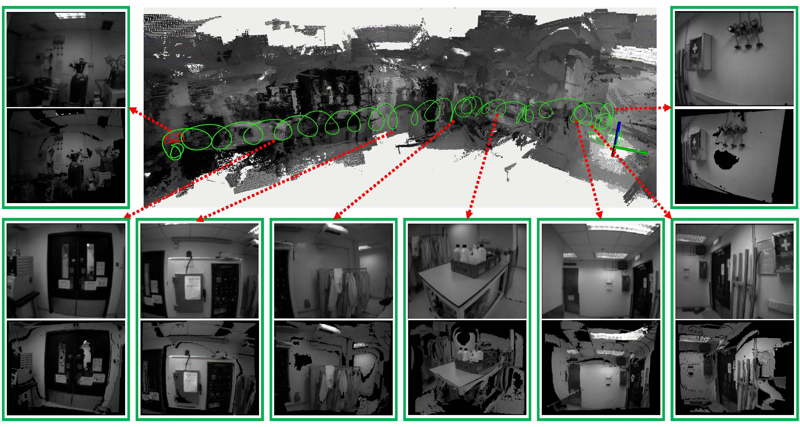
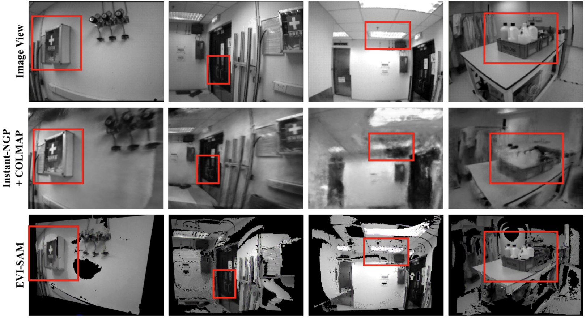
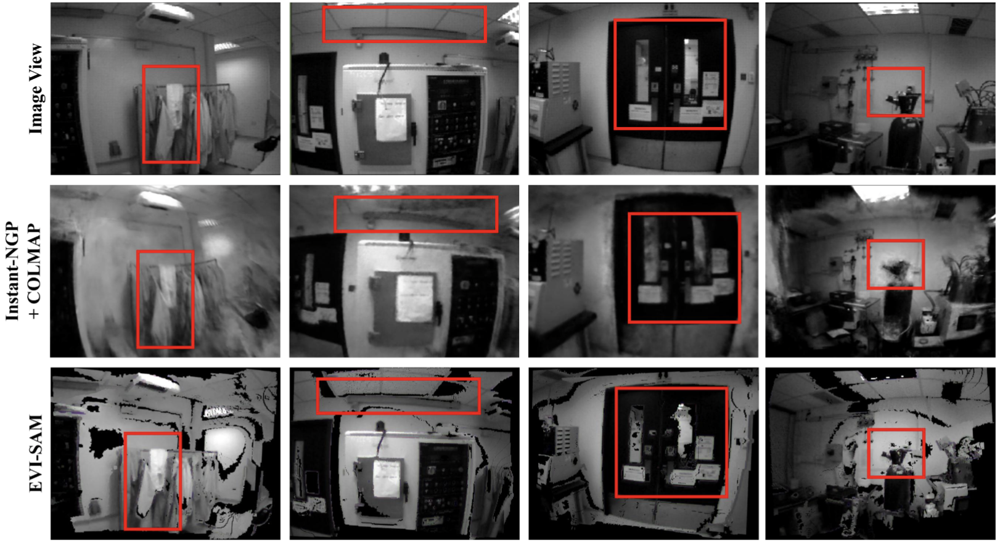

Abstract
Event cameras are bio-inspired, motion-activated sensors that demonstrate substantial potential in handling challenging situations, such as motion blur and high-dynamic range.
In this paper, we introduce EVI-SAM to tackle the problem of 6-DoF pose tracking and 3D dense reconstruction using the monocular event camera.
A novel event-based hybrid tracking framework is designed to estimate the pose, leveraging the robustness of feature matching and the precision of direct alignment.
Specifically, we develop an event-based 2D-2D alignment to construct the photometric constraint, and tightly integrate it with the event-based re-projection constraint.
The mapping module recovers the dense and colorful depth of the scene through the image-guided event-based mapping method.
Subsequently, the appearance, texture, and surface mesh of the 3D scene can be reconstructed by fusing the dense depth map from multiple viewpoints using truncated signed distance function (TSDF) fusion.
To the best of our knowledge, this is the first non-learning work to realize event-based dense mapping.
Numerical evaluations are performed on both publicly available and self-collected datasets, which qualitatively and quantitatively demonstrate the superior performance of our method.
Our EVI-SAM effectively balances accuracy and robustness while maintaining computational efficiency, showcasing superior pose tracking and dense mapping performance in challenging scenarios.
Video Demo
6-DoF Pose Tracking
To the best of our knowledge, this is the first hybrid approach that integrates both photometric (direct-based) and geometric (feature-based) errors within an event-based framework.
3D Dense Mapping
To the best of our knowledge, this is the first framework that employs a non-learning approach to achieve event-based dense and textured 3D reconstruction without GPU acceleration..
Real Time Mapping using CPU
The following figure is the visualization of the estimated camera trajectory and global 3D reconstruction (surface mesh) of our EVI-SAM. Sequentially display from right to left includes the event-based dense point clouds with texture information and intensity images, at selected viewpoints.

Mapping Performance Comparison with NeRF
Qualitative comparison of our EVI-SAM, the Instant-NGP (with COLMAP for localization), and the ground truth image view. The red box highlights the difference of the reconstruction quality and the motion blur caused by image blur in NeRF-based methods. While our event-based dense mapping demonstrates performance comparable to the Instant-NGP.

